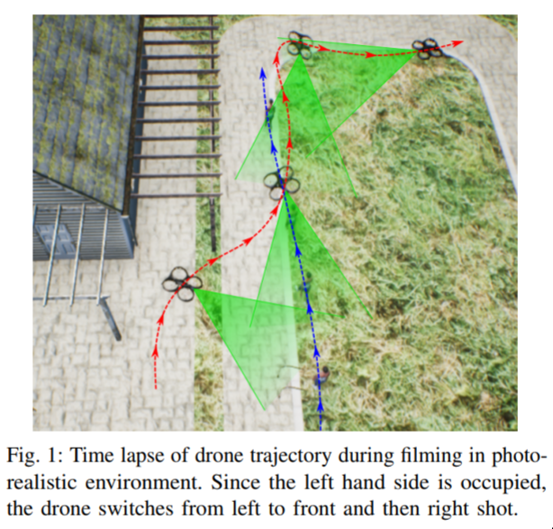

🌅 Items tagged "computer-vision"
-
Improving sample diversity of a pre-trained, class-conditional GAN by changing its class embeddings — October 10, 2019

Make your GAN generate more diverse pictures with this one simple trick!
Dialog on a Canvas with a Machine — October 10, 2019

Collaborating with computers to make cool art!
Prose for a Painting — October 8, 2019

Shakespeare-style painting descriptions!
Learn to explain efficiently via neural logic inductive learning — October 6, 2019

Explaining model decisions with logic!
Raiders of the Lost Art — September 10, 2019

Using deep learning to recover lost art!
Gravity as a Reference for Estimating a Person’s Height from Video — September 5, 2019

Computing peoples heights by asking them to jump!
Translating Visual Art into Music — September 3, 2019

Encoding images into music and then back to images!
Story-oriented Image Selection and Placement — September 2, 2019

We can learn which images to display next to text by understanding both!
Visual Deprojection — September 1, 2019

Using deep learning to "deproject" data!
A Low-Cost, Open-Source Robotic Racecar for Education and Research — August 21, 2019

Open hardware self-driving car framework. An amazing starting point!
Towards Arbitrary High Fidelity Face Manipulation — August 20, 2019

Expressive manipulation of face expressions!
Deep Sketch-based 3D Hair Modeling — August 20, 2019

Generating 3D hair models from sketches!
Video synthesis of human upper body with realistic face — August 19, 2019

Generating videos of people talking at desks.
Learning to Dress 3D People from Images — August 19, 2019

From just a few 2D photos we can dress a full 3D model.
3D Object Instance Re-Localization — August 16, 2019

Having found a 3D object before, can we find it again in a new view?
Image Inpainting via Structure-aware Appearance Flow — August 11, 2019

Improving inpainting by thinking about structure
Visual Search at Pinterest — August 5, 2019

Real-world example of visual search deployed at scale.
MaskGAN - Diverse and Interactive Facial Image Manipulation — July 27, 2019

Manipulation of photos of faces via semantic masks.
On the “steerability” of generative adversarial networks — July 16, 2019

Understanding what options levers we have for manipulating images coming from generative networks.
Autonomous Driving in the Lung — July 16, 2019

Sure, we've all heard about self-driving cars on roads. But what about self-driving cameras in lungs!?
Eliminating Forced Work via Satellites — July 12, 2019

Using computer vision to find forced labour camps, so that they can be shut down!
Synthetic fruit — July 10, 2019

Generating synthetic datasets helps us solve real problems.
Learning to understand videos for answering questions — July 10, 2019

Teaching computers to be able to answer questions about videos.
Linking Art through Human Poses — July 8, 2019

Finding connections between different art with deep learning!
Estimating travel time without roads — July 8, 2019

Using just "morphology" we can estimate travel time!
Attacking person-identification with patches — April 18, 2019

A graphic that can be printed that can prevent a certain algorithm from spotting you!
Detecting the Unexpected — April 16, 2019

How do we know what we don't know? Turns out we can know that.
Expressive 3D Body Capture from a Single Image — April 11, 2019

Rich 3D reconstruction from a single image.
Can a Robot Become a Movie Director? — April 5, 2019
A proposal that drones can know where to film, by tracking movement.
Image2StyleGan - aka Ryan Obama aka Oprah Johansson — April 5, 2019

How to make StyleGAN morph really well.
Learning how music and images relate — March 30, 2019

We can learn how to think about music and images in the same "space", and thus work out when they are related.
Detecting people using only WiFi — March 30, 2019

Thought you couldn't be spotted if there were no cameras? Sadly, wrong.
Face Synthesis from a Single Image — March 26, 2019

Conceptually simple; amazing results. Build a 3D model of a face from a single image!
Unconstrained Ear Recognition — March 11, 2019

Turns out we can work out who someone is from their ear.
Finding small objects in a large scene — February 6, 2019

A remarkable network that is able to determine low-level features from very large images.
What Is It Like Down There — June 13, 2018

Making up ground-view scenes from aerial imagery
Image Generation from Scene Graphs — April 4, 2018

Knowing the graph structure helps us generate pictures.
Priming Neural Networks — November 16, 2017

It's easier to find something when you know what you're looking for.
All tags:
art compression computer-vision drones ethics explainability (XAI) fashion funny generative music physics pose privacy real-world reinforcement-learning (RL) robotics science style-transfer sustainable-development-goals technical text (NLP) time-series ux-of-ai visual-question-answering visual-search visualisation
Braneshop is located on the traditional lands of the people of the Kulin nation. We acknowledge that sovereignty was never ceded and pay our respects to elders past, present and emerging. Finding the Heart of the Nation.